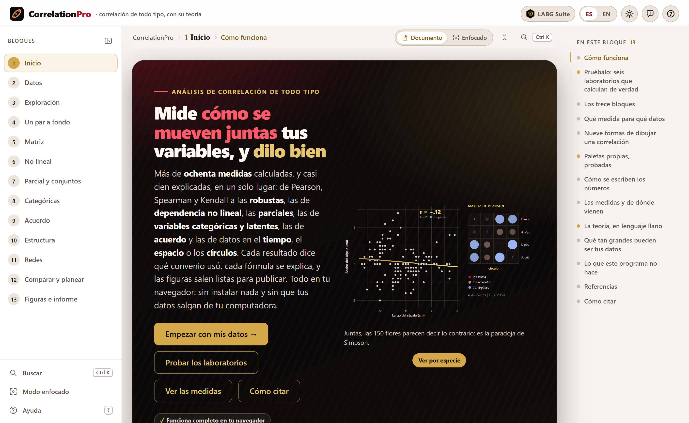
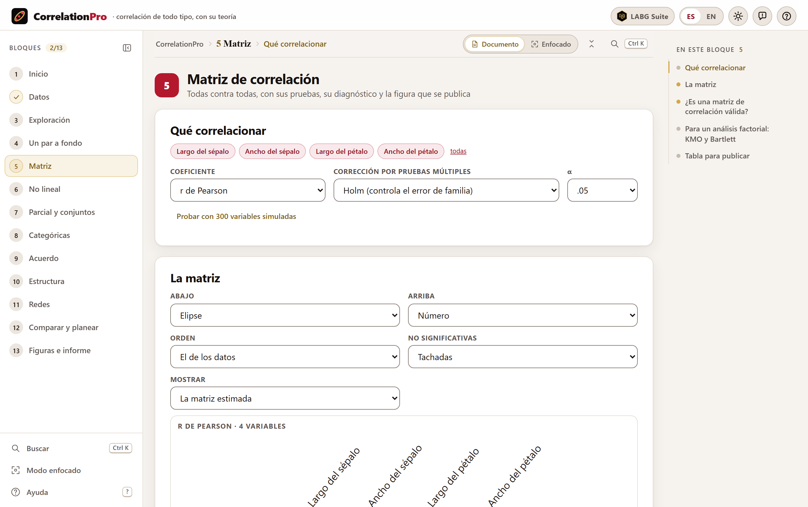
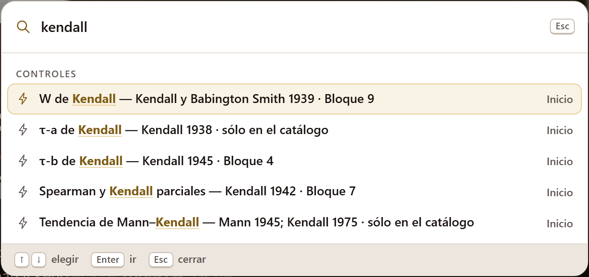

La cita del programa aparece también, lista para copiarse en dos formatos, en la sección Cómo citar de la portada de la app. El DOI de Zenodo 10.5281/zenodo.23867439 resuelve siempre a la versión más reciente; la versión 1.0.0 tiene además el suyo, 10.5281/zenodo.23867440. Código: https://github.com/luisangelbg/CorrelationPro.
CorrelationPro funciona por completo dentro de tu navegador. Los archivos que abres se leen en tu computadora y nunca se envían a ningún servidor: puedes analizar los datos de una tesis en curso, de un ensayo clínico o de una encuesta confidencial sin que nada de eso salga de tu equipo. El programa no usa cuentas, no guarda tus datos en ninguna parte fuera de tu equipo y no necesita internet para calcular.
Las ilustraciones, los diagramas y las capturas de pantalla de este manual son originales: se generaron con el propio programa o con código escrito para el manual. Los nueve conjuntos de datos que se usan como ejemplo son de dominio público; cuando un ejemplo es simulado, el texto lo dice.
El manual sigue el mismo orden que la app: trece bloques numerados que se recorren de arriba abajo en la barra de la izquierda. Cada capítulo explica un bloque y lleva su mismo número —el capítulo 5 es el Bloque 5, y sus secciones, figuras y tablas se numeran 5.1, 5.2…—. La introducción no lleva número: sus secciones son I.1, I.2…
Cada capítulo empieza con la idea que el bloque pone a prueba, sigue con lo que hay en pantalla en el orden en que aparece, y cierra con las reglas para leer el resultado y los errores más comunes. No hace falta leerlo de corrido: si ya sabes qué quieres medir, la tabla de la sección 1.4 te dice qué medida usar y en qué bloque está, y el apéndice B reúne las reglas de lectura de todos los bloques.
El color del bloque aparece en la apertura de su capítulo, en el número de cada sección, en la pestaña del borde de la hoja y en el índice, y es el mismo de la franja de la portada.
| Bloque | Nombre en la app | Qué hace |
|---|---|---|
| 1 | Inicio | La idea de correlación en lenguaje llano, seis laboratorios que calculan de verdad, el catálogo de 98 medidas, los glifos, las paletas y los estilos de reporte |
| 2 | Datos | Abrir hojas de cálculo o texto, el tipo y el papel de cada columna, los faltantes, las transformaciones y el asistente «¿qué correlación uso?» |
| 3 | Exploración | Matriz de dispersión, normalidad, linealidad, atípicos, influencia y el coeficiente recomendado para cada par |
| 4 | Un par a fondo | Todos los coeficientes de dos variables, con su prueba, sus intervalos, el bootstrap, la permutación y el factor de Bayes |
| 5 | Matriz | La matriz de muchas variables con sus correcciones por pruebas múltiples, su diagnóstico, nueve glifos y la tabla para publicar |
| 6 | No lineal | Medidas que ven cualquier forma de dependencia, el rastreo de toda la matriz y las cópulas |
| 7 | Parcial y conjuntos | Controlar terceras variables, la correlación múltiple y las correlaciones entre dos conjuntos de variables |
| 8 | Categóricas | Tablas de contingencia, sus medidas, las correlaciones latentes y la matriz con el coeficiente adecuado a cada par |
| 9 | Acuerdo | Concordancia, Bland–Altman, coeficientes intraclase y los κ: cuando la pregunta es si dos medidas dicen lo mismo |
| 10 | Estructura | Grupos, medidas repetidas, series de tiempo, datos espaciales, filogenias, ángulos y composiciones |
| 11 | Redes | Redes de correlación marginal, parcial y regularizada, con centralidades y comunidades |
| 12 | Comparar y planear | Comparar correlaciones y matrices, corregir por atenuación y rango, planear la muestra y combinar estudios |
| 13 | Figuras e informe | Exportar figuras, diseñar una paleta, la tabla para publicar, los métodos redactados, el informe y el proyecto |
Aclaraciones y consejos prácticos que ahorran tiempo.
Lo que puede cambiar tus conclusiones si se pasa por alto.
La idea detrás de un cálculo, sin fórmulas innecesarias.
Un caso con los datos incluidos en el programa, con los números que da la app.
| Si el resultado cae en este caso… | entonces esta es la lectura recomendada. |
Son guías para interpretar, no leyes: lo que sabes del fenómeno, del diseño y de cómo se midió siempre manda.
Lo que se ve una y otra vez en artículos y tesis, y cómo evitarlo.
| Así se escribe | Significa |
|---|---|
| Usar en toda la app | Un botón, campo o menú de la app, con su texto tal como aparece en pantalla en español. |
| Bloque 12›Metaanálisis | Una ruta: abre lo primero y dentro busca lo segundo. |
sepal_length, .csv | Un nombre de columna, de archivo o un valor que se escribe tal cual. |
| r, ρ, τ, n, p | Los símbolos de la estadística, en cursiva cuando son letras latinas; ρ es la correlación de la población y r la de la muestra. |
| .74 · 0.74 | Los números se escriben como los escribe la app en el estilo elegido. En este manual se usa el de las ciencias sociales: sin cero inicial en lo que no puede pasar de 1 (r, p) y con él en lo demás. |
| ● ◐ — | Disponible · disponible en parte o con condiciones · no aplica. |
Una correlación parece el cálculo más sencillo de la estadística, y por eso es el que más se usa mal: con datos que no lo sostienen, con el coeficiente equivocado, sin intervalo, sin ver la nube, ignorando que los casos vienen en grupos o en el tiempo. CorrelationPro reúne en un solo lugar las medidas de asociación que la literatura ha propuesto en ciento cuarenta años, con sus pruebas y sus convenios, y recorre contigo el análisis en el orden en que se hace bien.
Es un programa para medir, probar, comparar y comunicar la asociación entre variables. Corre en el navegador, sin instalar nada, y trae su propio motor de cálculo escrito desde cero: ninguna parte depende de bibliotecas de otros.
Cubre las correlaciones clásicas (Pearson, Spearman, Kendall) y las robustas; las de dependencia no lineal, que ven relaciones en forma de U o de onda que Pearson no ve; las parciales y las que unen dos conjuntos de variables; las de variables categóricas, ordinales y latentes; las de acuerdo entre métodos y evaluadores; las de datos con estructura —grupos, medidas repetidas, tiempo, espacio, filogenias, ángulos y composiciones—; las redes de correlación; y las herramientas que vienen después de calcular: comparar dos correlaciones, corregir por el error de medida, planear el tamaño de muestra y combinar estudios.
Cada resultado dice qué convenio usó —qué hacer con los empates, qué divisor, qué corrección—, porque dos programas que dan números distintos para «el mismo» coeficiente casi siempre difieren en eso. Cada fórmula se explica, en el catálogo y en las notas de teoría de cada bloque. Y las figuras salen listas para una revista, con paletas que se leen igual con daltonismo y en blanco y negro.

Una buena manera de saber si el programa te sirve es ver qué preguntas contesta, y en qué bloque.
| Pregunta | Bloque |
|---|---|
| ¿Qué coeficiente uso con estas dos variables? | 2 3 |
| ¿Mis datos cumplen los supuestos de Pearson? ¿Hay atípicos que lo deciden todo? | 3 |
| ¿Cuánto vale la correlación, con qué intervalo, y es distinta de cero? | 4 |
| ¿Cuál es la evidencia a favor y en contra de que haya relación? | 4 12 |
| ¿Cómo se relacionan veinte variables entre sí, y cuáles de esas correlaciones sobreviven a la corrección por pruebas múltiples? | 5 |
| ¿Hay una relación que no es una recta, o que sólo aparece en las colas? | 6 |
| ¿Siguen relacionadas dos variables cuando controlo por una tercera? | 7 |
| ¿Se parecen dos conjuntos de variables (dos ordenaciones, dos matrices de distancias)? | 7 |
| ¿Qué tan asociadas están dos variables categóricas, o una ordinal y una continua? | 8 |
| ¿Dos instrumentos, dos métodos o dos evaluadores dicen lo mismo? | 9 |
| ¿Mis casos son independientes? ¿Qué pasa si vienen en grupos, en el tiempo o en el espacio? | 10 |
| ¿Qué variables se conectan directamente con cuáles, y cuál está en el centro? | 11 |
| ¿Es mayor esta correlación que aquella? ¿Cuántos casos necesito? ¿Qué dicen todos los estudios juntos? | 12 |
| ¿Cómo publico la figura, la tabla y los métodos? | 13 |
Todo lo que sigue descansa en seis ideas. Si te quedas con ellas, la mitad de los errores que se cometen con las correlaciones ya no son posibles.
Una tabla: una fila por caso y una columna por variable. Se abre de un archivo, se pega desde una hoja de cálculo o se toma de los ejemplos.
| Entra | Formato |
|---|---|
| Hojas de cálculo | Libros .xlsx, .xlsm y .ods, con elección de hoja |
| Texto | .csv, .tsv, .txt y .dat, con coma, punto y coma, tabulador o barra como separador, punto o coma decimal, y codificación UTF-8, UTF-16 o Latin-1, detectados solos |
| Pegado | Lo que copies de una hoja de cálculo, con su encabezado |
| Proyectos | Un paquete .json guardado antes por la propia app (Bloque 13) |
| Resúmenes | Para comparar correlaciones, corregirlas, planear o hacer un metaanálisis basta con escribir r y n (Bloque 12) |
| Sale | Formato |
|---|---|
| Figuras | PNG, SVG, PDF vectorial y TIFF, a los anchos de revista de 85, 114 y 180 mm, por el estudio de figuras |
| Tablas | Copiadas al procesador de textos con su formato, o en CSV y HTML |
| Texto | Los métodos redactados con sus referencias, y un informe imprimible |
| Proyecto | Un paquete .json con los datos, sus tipos y las preferencias, para retomar el análisis |
Sólo un navegador moderno, en una versión de los últimos años. No hace falta instalar nada ni tener internet; el programa entero cabe en una carpeta.
index.html. Es lo más sencillo y funciona igual que todo lo demás: todos los cálculos y los ejemplos están dentro del programa.Open CorrelationPro.bat. Abre un servidor local mínimo en el puerto 9950 y la app en http://localhost:9950. Sólo hace falta para abrirla desde otro equipo o una tableta de la misma red; el archivo server.ps1 explica cómo.Sin copiar nada, la misma app se abre en línea en https://luisangelbg.github.io/CorrelationPro/, y la carpeta del programa se descarga de https://github.com/luisangelbg/CorrelationPro.
Las preferencias —idioma, tema, paleta, estilo de los números— se guardan en el propio navegador y se recuerdan la siguiente vez. Los datos no: cada vez que abres la app empieza vacía, y para retomar un análisis está el paquete del proyecto del Bloque 13.
El motor está escrito para que el navegador no se trabe. Estos son tiempos medidos en una computadora de escritorio con el mismo motor que corre en la app:
| Cálculo | Tiempo | En la práctica |
|---|---|---|
| Matriz de Pearson de 200 × 200 variables, 1 000 filas | 34 ms | instantáneo |
| Matriz de Pearson de 1 000 × 1 000 variables | 83 ms | instantáneo; se dibuja en lienzo |
| τ-b de Kendall con 100 000 pares | 64 ms | instantáneo |
| Correlación de distancias con 2 000 pares | 33 ms | instantáneo; hasta 3 000 pares |
| Prueba de Mantel, 9 999 permutaciones, 200 sitios | 0.34 s | un instante |
| Bootstrap BCa de r con 1 999 remuestreos, 1 000 pares | 0.9 s | un instante |
| Lazo gráfico con EBIC, 30 variables y 300 filas | 1.0 s | un instante |
Cuando un cálculo va a tardar más de un instante, la app lo avisa con una espera animada y, si puede, ajusta sola el número de remuestreos al tiempo disponible, y lo dice.
Todas las aplicaciones de la suite comparten la misma barra, la misma navegación y las mismas herramientas de figuras, así que lo que aprendas aquí te sirve en las demás.

1 2 3 4 5 6 7 8 9 10?).[ la contrae.Ctrl+K). Un bloque, una sección, un control o una medida, por su nombre.Arriba de cada bloque, la ruta dice dónde estás —CorrelationPro›5 Matriz›Qué correlacionar—, y al pie de cada bloque dos botones llevan al anterior y al siguiente. Con Alt+← y Alt+→ se pasa de un bloque a otro desde el teclado; en el modo enfocado, de una sección a otra. Cuando cambias un control y los resultados se recalculan más abajo, aparece un botón flotante, Último cambio, que te regresa al control que tocaste.

Ctrl+K) con «kendall» escrito: encuentra las cinco medidas del catálogo que llevan el nombre y dice en qué bloque se calcula cada una. Enter lleva al resultado elegido.Todas las figuras de la app se pueden abrir en el estudio de figuras, una ventana común a la suite donde se cambian los textos, el tamaño de la letra, la leyenda y los colores sin tocar los datos, y se exporta a los anchos y resoluciones de las revistas. El capítulo 13 lo explica a fondo. Junto a cada figura, el botón ✎ abre el editor de la figura, para cambiar sus textos, sus colores y su leyenda.
Para aprender sin datos propios, la app trae nueve conjuntos de dominio público, todos clásicos de la historia de la correlación. Se abren en Bloque 2›Conjuntos de ejemplo o con los botones de los bloques que los usan. Cuando un bloque necesita un ejemplo que no existe entre ellos —datos espaciales, una filogenia, una red de evaluadores— lo simula y lo dice en su título: «Simulado… (no son datos reales)».
| Conjunto | n | Qué tiene y para qué sirve |
|---|---|---|
| Lirios de Anderson (1935, 1936) | 150 | Cuatro medidas de la flor de tres especies de Iris. La matriz de correlación, las correlaciones dentro y entre especies y la paradoja de Simpson. |
| Guisantes de Galton (1877) | 700 | Diámetro de la semilla madre y de la hija en el guisante de olor (Lathyrus odoratus). Muchos empates: los convenios de Spearman, Kendall y ξ. |
| Estaturas de Galton (1886) | 928 | Estatura de los hijos y de sus padres. La tabla con la que se describió la regresión a la media. |
| Maíz de Darwin (1876) | 15 | Altura de pares de plantas de maíz (Zea mays) de polinización cruzada y de autopolinización en la misma maceta. Datos pareados. |
| Suiza, 1888 | 47 | Seis indicadores de 47 distritos francófonos: relaciones de todos los signos, la red parcial y la matriz que alimenta un análisis factorial. |
| Economía de EE. UU., 1947–1962 | 16 | Siete series anuales casi colineales: correlaciones altísimas que vienen del tiempo, no de una relación directa. |
| Titanic, 1912 | 2 201 | Clase, sexo, edad y supervivencia: tablas de contingencia, la V de Cramér, la razón de momios y la tetracórica. |
| Frenado de autos (Ezekiel, 1930) | 50 | Velocidad y distancia de frenado: una relación que crece más que en línea recta. |
| Sueño con dos fármacos (1905) | 10 | Horas de sueño ganadas por diez pacientes con dos fármacos: datos pareados, el ejemplo con que se presentó la prueba t. |
Los bloques están en el orden en que se hace un análisis de correlación bien hecho. No hace falta pasar por todos: los que no apliquen a tus datos se saltan, y cada bloque te dice si conviene volver a uno anterior.
Lo que abres en el Bloque 2 lo usan todos los demás. Si cambias el tipo de una columna, el manejo de faltantes o abres otros datos, cada bloque recalcula lo suyo la siguiente vez que lo visitas, y su palomita en la barra se apaga hasta entonces.
Un programa de estadística vale lo que valen sus números. Cada motor de CorrelationPro se comparó, bloque por bloque, con implementaciones independientes escritas por otras personas y con fórmulas recalculadas aparte, sobre los conjuntos de ejemplo y sobre datos simulados con casos difíciles: empates, atípicos, muestras de cinco casos, correlaciones cercanas a 1.
La comparación sirvió también para encontrar errores, propios y ajenos. Cuando una referencia publicada no coincide con la fórmula del artículo original, la app sigue la fórmula original y el capítulo correspondiente lo dice. Los detalles —qué se comparó, con qué tolerancia y qué errores se encontraron— acompañan al programa en su carpeta de validación.
Saber dónde termina una herramienta es tan útil como saber qué hace.
| No hace | Por qué, y qué hacer |
|---|---|
| Inferencia causal | Una correlación no dice qué causa qué. La app lo recuerda donde importa, pero no estima efectos causales. |
| Modelos de regresión completos | Aquí se mide la asociación. Para modelos lineales y mixtos con sus diagnósticos está otra aplicación de la suite, SigmaPro. |
| Análisis factorial y de componentes | La matriz de correlación es su punto de partida, y el Bloque 5 dice si sirve para eso (KMO y Bartlett); el análisis mismo está en PCAPro, de la misma suite. |
| Correlación multinivel con modelo mixto | El Bloque 10 separa la correlación dentro y entre grupos de forma descriptiva; el modelo mixto bivariado no está incluido. |
| Datos que no caben en memoria | Hasta decenas de miles de filas y mil variables; más allá, o con medidas costosas, la app avisa antes de empezar. |